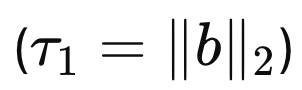
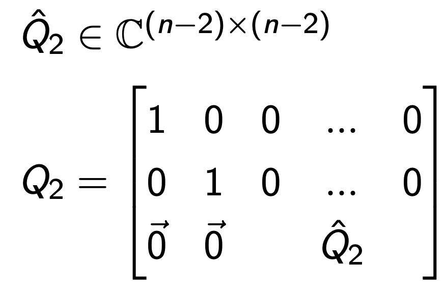
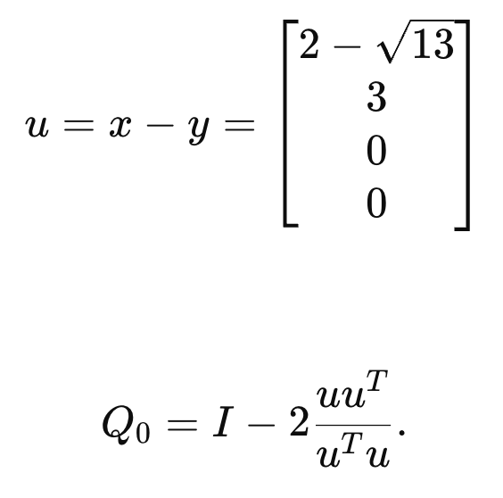
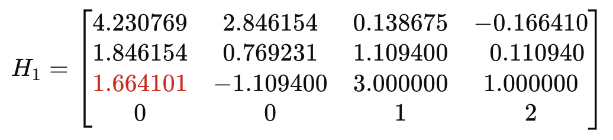

- Eigen Value Problem - part2
지난 시간에, Eigen value problem의 기본적인 개념
그리고 마지막에 Similiarity Transformation에서 다루었다.
https://jeffdissel.tistory.com/226 - Eigen Value Problems - Part1
선형대수학에서 무조건 나오는 내용이고,처음에 이해하기 어려운 내용이 바로 "고유값,고유벡터,고유값 분해" 개념이다. 다시한번, 빠르게 리뷰를 해보도록 하자.Square Matrix A 가 존재한다고 하
jeffdissel.tistory.com
(지난포스터 내용)

지난시간에 새로운 개념들을 계속해서 배웠고,
정확히 어디에 쓰이는 지는 자세하게 다루지 않았다.
오늘을 위해서 아껴둔 것...
위의 Transformation에서 X = Q 라고 설정하고,
Q* = Q -1 즉 Unitary Matrix라고 한다면, 다음과 같이 A를 표현가능하다

A,T are similiar, X = Q is a unitary
우리는 위 분해를
Schur Factorization
이라고 부른다.
그리고 정말 여기서 핵심은
T는 upper triangle Matrix이고, 고유값이 대각원소를 구성한다는 것!.
여기서 핵심은, 모든 Square Matrix는 위 분해가 가능하다는 것이다.

지난시간에 다루었던, similiart transformation에서 파생된 분해들은...

(digonal Matrix: Sigma)
조건: A는 non singular Matrix

(digonal Matrix: Sigma)
조건:
A
is normal (Hermitian, skew-Hermitian, or unitary)
전부 A가 특정 Matrix이어야 위 분해들이 가능했지만,
Schur Factorization은 모든 Square Matrix에 대해 가능하다는 점이 핵심이다.
따라서,
"Most of the general purpose eigenvalue algorithms in use toda
proceed by computing the Schur factorization"
여기서 Unitary Matrix를 계속 곱해주면서,

A -> T로 수렴시키는 방법을 사용한다.

자세하게는, 두과정을 통해 진행이 된다. - A -> H
- H -> T

============================
그런데 여기서 잠깐.
왜. ?? 우리가 굳이 A - > T로 전환하려고 하는건가????
바로 Eigen Value를 찾기 위해서!
T의 Diagonal Term이 바로 Eigen Value of A이기 떄문!
============================
다시 본론으로 돌아가서, 우리는. A -> H, upper Hessenberg Matrix로 먼저 전환해준다고 하였다.
(근데 H가 무슨 Matrix?? 정의는 다음과 같다)

근데 왜 바꿔???
"Note that both the LU and QR decomposition of an upper Hessenberg matrix is relatively cheap"
Procedure (A -> H)
먼저 n x n Matrix A를
벡터 b,c, Scalar a11,
Matrix A hat 으로 나누어주자.

여기서 우리는 upper Hessenberg Matrix(H)로 바꾸기 위해서,
즉 0으로 특정 요소들을 만들기 위해서!
Reflector
를 사용한다.
https://jeffdissel.tistory.com/221
2. QR factorization - part2 (Householder)
지난시간에 QR 분해의 기본적인 원리에 대해서 살펴보았다.(정확히 본질을 이해하면, QR분해가 아무것도 아니라는 것을 알게 된다) 그러니까, 어떤 A라는 matrix의 column vector들을,range(A) Basis vector{q1
jeffdissel.tistory.com
(reflector는 너무나도 중요하고, 처음에 생소한 개념이다. 꼭 이전 블로그 글을 읽고오시길.
QR 분해를 위한, Householder Algorithm에서 등장하였다.)
Reflector Q1 hat을 다음 조건을 만족하도록, 제작한다.
(b벡터를 회전시켜 b벡터의 local e1방향 제외 전부 0 으로 만들어 줌)


dimension: (n -1) x 1
그리고 Q_hat을 확장시켜 n x n 크기의 Q1 Matrix를 정의한다.


아주 특이하게도 위의 성질을 띈다.
이제 이를 A1과 곱한 행렬을 A(1/2)라고 편의상 정의하자.

(1,1) (2,1)를 제외하고 1 행의 원소는 0.
이제 우리는 Similiarity Transformation을 해주기 위해서. Q1 = Q1을 뒤에 추가로 곱해준다.


자 앞뒤로 Q1(1st reflector)를 곱해준 결과,
1행의 1열, 2열을 제외하고 모두 0으로 전환되었다.
(여기까지가 1st iteration)
HouseHolder Algorithm과 동일하다.
이제, 2행의 1,2,3열 제외 전부 0을 만들어 주기 위해,
2nd reflector를 다음과 같이 정의한다.

이후 A1(1st iteration result)의 앞에 먼저곱해주면.
(Q hat 2 b2는 사실상 e1방향만 살아남고 나머지는 0으로 회전된 벡터이다)

Similiarity Transformation을 진행해야, eigenvalue가 그대로 보존이 되기때문에,
강제로 뒤에 Q2-1 = Q2 를 곱해주어 2nd iteration을 마무리하자.

위 과정을 계속해서 반복하면,

Q는 계속해서 누적되어 쌓이고,

최종적으로 Upper Hessenberg Matirx B를 A로부터 도출 할 수 있다.

사실상 Householder 와 거의 비슷하고,
Pseudo code는 다음과 같다.

그리고 총 연산수는 다음과 같다.

==============================
여기서 만약에 A = A (Conjugate of A)인
Hermitan Matrix라면?
연산수는 당연히 절반으로 줄어들고,
대칭으로 0 이 계속해서 되는 것을 알 수 있다.

==============================
한편 우리의 최종 목표는 Schur Factorization을 실시하여,
Eigenvalue of. A를 찾는게 최종 목표였다.
이를 달성하기 위해서
1. A -> H (Hessenberg Matirx)
를 먼저 선행하고, 이후에

Hessenberg Matrix State
이제, 진짜 목적을 달성하기 위해.
2. H -> T (right traingle Matrix)
를 구현해보자.
위 두번째 과정을 효율적으로 진행할
Francis Algorithm
먼저 이 알고리즘의 핵심은 'shifting'이다.
Eigenvalue 후보를 rho로 정한 후에 A를 옮겨준다.

Shifted A Matrix.
위 결과 shifted A의 1st column은 다음과 같다.

여기서 위 벡터를 Reflector를 이용하여,
똑같이 전부 0으로 변환해주자.

그리고 eigenvalue보존을 위한 similiarty Transformation을 위해서,
뒤에 Q0를 다시 곱해주어야한다.

여기서 재밌는 사실은, 원래계획과 다르게 Q0를 뒤에 곱해주면,
이렇게 0으로 1행의 off diagonal term이 전부 바뀌는게 아니라
새로운 non zero term (Bulge)가 생성이 된다.

+: Bulge
bulge를 일단 무시하고,
그다음 2행의 off diagonal term을 0로 만들어 주는
Reflector Q23를 제작한 후에, 위 Matrix에 곱해주면,

신기하게도, Bulge가 이동한다.

'일단 bulge가 이동한다' 라는 사실을 인지하고,
예시를 통해서 정확히 어떤 과정이 일어나고 있는지?
우리의 목표인 Triangle Matrix가 되고 있는 건지 짚고 넘어가자.
초기 upper Hessenberg Matrix가 다음과 같다고 하자.

2만큼 shift했다고 가정하자 (mu = 2)

첫 reflector는 1열 벡터 x를 e1방향을 제외하고 0으로 만드는 것.

Reflector를 만드는 방법은 householder algorithm에서와 동일하다.

Q0를 이용하여 H를 변형시키면 다음과 같이 bulge가 생성된다.

이제 기존에서와 같이 2행의 offdiagonal term을 0으로 만들
reflector를 다음과 같이 설정하고, 똑같이 곱해주자.

Q1 = G1으로 양옆에 곱해주면,
다음과같이 1행은 다시 bulge가 사라졌고,
오히려 2행에 bulge가 새롭게 생긴 것을 알 수 있다.

여기서 중요한점은 기존의 H와 방금 H2의 1행 off diagonal term을 잘 살펴보자.
기존 3 -> 2.485461로 감소 한 것을 알 수 있다.
즉, buldge라는 숫자는 계속해서 오른쪽 밑으로 믿으로 iteration이 진행하면서 이동하다가,
결국 마지막에는 마지막행 diagonal term으로 흡수되지만,
(사라지지만)
그 bulge값의 출처는 사실상 offdiagonal term들에서 나왔음을 알 수 있다.
즉, Franci's Algorithm의 핵심은,
"off diagonal term의 값들을 bulge로 뽑아내서 밑으로 흘러 내려가 사라지게 만드는 것"
따라서, 위 과정을 쭉 반복하다보면,
H -> T로 전환시킬 수가 있고,
이때의 Diagonal Term -> Eigen Value of A
인 우리의 목표를 이룰 수 있게 된다.